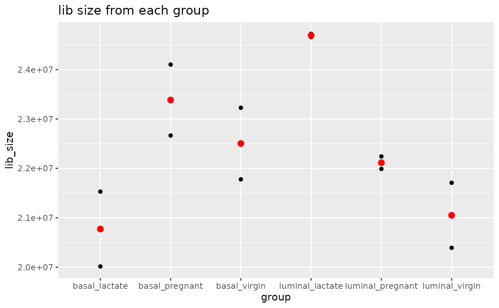

Leow_R_Package_Tutorial.RmdLoad in these libraries.
## ── Attaching packages ─────────────────────────────────────── tidyverse 1.3.1 ──## ✓ tibble 3.1.6 ✓ dplyr 1.0.7
## ✓ tidyr 1.1.4 ✓ stringr 1.4.0
## ✓ readr 2.1.1 ✓ forcats 0.5.1
## ✓ purrr 0.3.4## ── Conflicts ────────────────────────────────────────── tidyverse_conflicts() ──
## x dplyr::filter() masks stats::filter()
## x dplyr::lag() masks stats::lag()## Loading required package: usethisYou might need to install these R packages for this package to run.
if (!requireNamespace("BiocManager", quietly = TRUE))
install.packages("BiocManager")
BiocManager::install("edgeR")
if (!requireNamespace("BiocManager", quietly = TRUE))
install.packages("BiocManager")
BiocManager::install("limma")Load the packages.
Now you can install my R package! and load it…
devtools::install_github("ChiJingLeow/R_Package_Leow")## Using github PAT from envvar GITHUB_PAT## Downloading GitHub repo ChiJingLeow/R_Package_Leow@HEAD##
checking for file ‘/tmp/RtmpWfIMJc/remotes30c31fa3cab/ChiJingLeow-R_Package_Leow-10e0791/DESCRIPTION’ ...
[32m✓
[39m
[38;5;247mchecking for file ‘/tmp/RtmpWfIMJc/remotes30c31fa3cab/ChiJingLeow-R_Package_Leow-10e0791/DESCRIPTION’
[39m
[36m
[39m
##
[38;5;247m─
[39m
[38;5;247m
[39m
[38;5;247mpreparing ‘RPackageLeow’:
[39m
[36m
[39m
##
checking DESCRIPTION meta-information ...
[32m✓
[39m
[38;5;247mchecking DESCRIPTION meta-information
[39m
[36m
[39m
##
[38;5;247m─
[39m
[38;5;247m
[39m
[38;5;247mchecking for LF line-endings in source and make files and shell scripts
[39m
[36m
[39m
##
[38;5;247m─
[39m
[38;5;247m
[39m
[38;5;247mchecking for empty or unneeded directories
[39m
[36m
[39m
##
[38;5;247m─
[39m
[38;5;247m
[39m
[38;5;247mbuilding ‘RPackageLeow_0.0.0.9000.tar.gz’
[39m
[36m
[39m
##
## ## Installing package into '/tmp/RtmprbyfKp/temp_libpath119581abfe8'
## (as 'lib' is unspecified)
library("RPackageLeow")Download the data for this package.
These data come from a Nature Cell Biology paper, EGF-mediated induction of Mcl-1 at the switch to lactation is essential for alvaelor cell survival (Fu et al., 2015).
The first file is the gene counts and the second file is the sample information.
download.file("https://raw.githubusercontent.com/ChiJingLeow/R_Package_Leow/master/Data/GSE60450_LactationGenewiseCounts.txt", destfile = "/cloud/project/Data/Genedata.txt")
download.file("https://raw.githubusercontent.com/ChiJingLeow/R_Package_Leow/master/Data/SampleInfo_Corrected.txt", destfile = "/cloud/project/Data/Sampleinfo.txt")Read the gene counts and sample info files using read.delim
data <- read.delim("/cloud/project/Data/Genedata.txt")
sampleinfo <- read.delim("/cloud/project/Data/Sampleinfo.txt")The gene counts data is in a table which includes GeneID, length, 12 samples, and the reads.
Function 1: countdata_no_NA
The function takes in a dataset and removes potential NA values, geneID and length.
It returns dataset with only counts.
The sample names are way too long…
Function 2: Short_name
The function takes in the dataset and returns with shortened sample names. You should see the sample names like MCL1.DG rather than 30 characters in length.
Function 3: DGEobject
We can make a DGElist object from the package edgeR, “counts” and “samples” are stored in it.
This function takes in the dataset, creates a DGElist and adds the group category from sampleinfo to it.
You should see the group and library size are not stored in the DGElist.
DGEobject <- function(countdata, sampleinfo) {
if(is.data.frame(countdata) == FALSE) {
return("not a dataframe")
}
if(is.data.frame(sampleinfo) == FALSE) {
return("not a dataframe")
}
product <- DGEList(countdata)
combined <- paste(sampleinfo$CellType, sampleinfo$Status, sep = "_")
combined <- factor(combined)
product$samples$group <- combined
return(product)
}
object1 <- DGEobject(countdata,sampleinfo)
object1## An object of class "DGEList"
## $counts
## MCL1.DG MCL1.DH MCL1.DI MCL1.DJ MCL1.DK MCL1.DL MCL1.LA MCL1.LB MCL1.LC
## 1 438 300 65 237 354 287 0 0 0
## 2 1 0 1 1 0 4 0 0 0
## 3 0 0 0 0 0 0 0 0 0
## 4 1 1 0 0 0 0 10 3 10
## 5 106 182 82 105 43 82 16 25 18
## MCL1.LD MCL1.LE MCL1.LF
## 1 0 0 0
## 2 0 0 0
## 3 0 0 0
## 4 2 0 0
## 5 8 3 10
## 27174 more rows ...
##
## $samples
## group lib.size norm.factors
## MCL1.DG basal_virgin 23227641 1
## MCL1.DH basal_virgin 21777891 1
## MCL1.DI basal_pregnant 24100765 1
## MCL1.DJ basal_pregnant 22665371 1
## MCL1.DK basal_lactate 21529331 1
## 7 more rows ...Function 4 :Filter_low_counts
Filtering out low counts (lowly expressed genes) is one of the first steps in analyzing gene expressions.
The function filters out counts per million (cpm) that’s lower than 0.5 and gives you a summary of the counts above the threshold.
Filter_low_counts <- function(data) {
if(is.data.frame(data) == FALSE) {
return("not a dataframe")
}
data_cpm <- cpm(data)
threshold <- data_cpm > 0.5
threshold <- summary(threshold)
return(threshold)
}
filtered <- Filter_low_counts(countdata)
filtered## MCL1.DG MCL1.DH MCL1.DI MCL1.DJ
## Mode :logical Mode :logical Mode :logical Mode :logical
## FALSE:12572 FALSE:12439 FALSE:12775 FALSE:12748
## TRUE :14607 TRUE :14740 TRUE :14404 TRUE :14431
## MCL1.DK MCL1.DL MCL1.LA MCL1.LB
## Mode :logical Mode :logical Mode :logical Mode :logical
## FALSE:12981 FALSE:13011 FALSE:13040 FALSE:12736
## TRUE :14198 TRUE :14168 TRUE :14139 TRUE :14443
## MCL1.LC MCL1.LD MCL1.LE MCL1.LF
## Mode :logical Mode :logical Mode :logical Mode :logical
## FALSE:13925 FALSE:13859 FALSE:14672 FALSE:14669
## TRUE :13254 TRUE :13320 TRUE :12507 TRUE :12510To compare the library sizes from each group, we can use
Function 5: plot_library_reads
The functions takes in the group and the library sieze. Red dots are the mean from each group.
plot_library_reads <- function(group, lib_size) {
if(is.numeric(lib_size) == FALSE) {
return("not a numeric data")
}
ggplot(mapping = aes(x = group, y = lib_size)) +geom_point() +ggtitle("lib size from each group") +stat_summary(fun.y = mean, col ="red", fill = "red")
}
plot_library_reads(object1$samples$group , object1$samples$lib.size)## Warning: `fun.y` is deprecated. Use `fun` instead.## Warning: Removed 6 rows containing missing values (geom_segment).